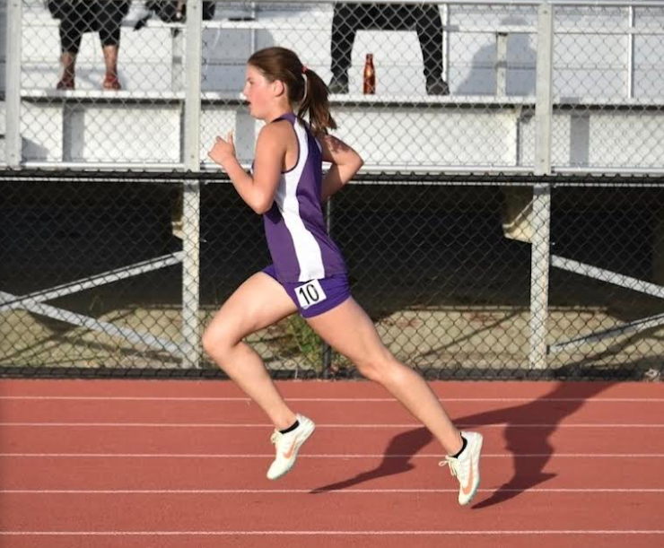

Learn about my achievements!
Here are some things to know:
Middle school

Throughout all of middle school, and my freshman year of high school, I have achieved all A’s in every subject. In elementary school, I really struggled with schoolwork. I would not do my homework and was falling behind in class. Soon I got a wake up call when my mom told me that if my grades continued to plummet, I might have to be held back. After that moment, I started to really focus on achieving good grades and doing all my schoolwork. It was hard at first to get out of my slump, but now I am so thankful I did! Its allowed me to become the hardworking person I am today, and my goal is to continue getting A’s throughout the rest of highschool and get into the Honors Society.
High school
During my first year of high school XC my goal was to get a spot on varsity. After a lot of hard work, I finally achieved my goal. Not only did I get a spot on varsity, but I also got the opportunity to compete at NCS league championships! It was here that I got a new PR and where my team came in fourth place overall. During my freshman track and field season, I also got a spot on varsity and qualified for three events at NCS! I have become passionate about hurdles and continue to push myself in this event. I've put so much time and work into these sports, starting from fourth grade, and it was amazing to have it all pay off!

I am interested in the FBI's youth leadership program, or YLP. The program is highly competitive but it teaches subjects I am passionate about, and being able to attend it will further my knowledge in them all. YLP focuses on the issues youth face today and is an amazing leadership program.

This year, after a full semester learning how to code, I was able to create a fully playable video game called Sky Run. It took a while to code for, and it was a very hard process, but it was very rewarding to create something for others to enjoy. In the photo above, you can see the home screen of Sky Run explaining the rules of the game.
In additon to all my other achievments and goals, I also created this website! Without using any template, I created this site from scratch, coding with HTMl and CSS. It took a lot of hardwork and was difficult to do, but I'm proud of how it turned out!
This year in my computing class we focused a lot on CS and how it has integrated into our daily lives. CS has progressesd so much since its beginning, so I created a collage to capture a few of things we learned CS has had a hand in. I'm interested in learning more about how CS can further AI. It's amazing how far AI has come because of CS and it will definitely help us go further! Robot dogs and other AI such as Alpha Go have shown us the potential we have in coding. All aspects of my collage have something to do with computers, such as the truck drivers being replaced by AI. Or the punnett squares being able to display alleles through user input. CS allows us to create, and has opened us up to a world we didn't have before. While some countries have advanced more than others, the benefits and downfalls of CS are evident pretty much everywhere. CS and AI has made us more efficient as a species, but as seen with the unemployed truck drivers, it is also slowly taking over our lives and only time will tell if it's for better or worse.